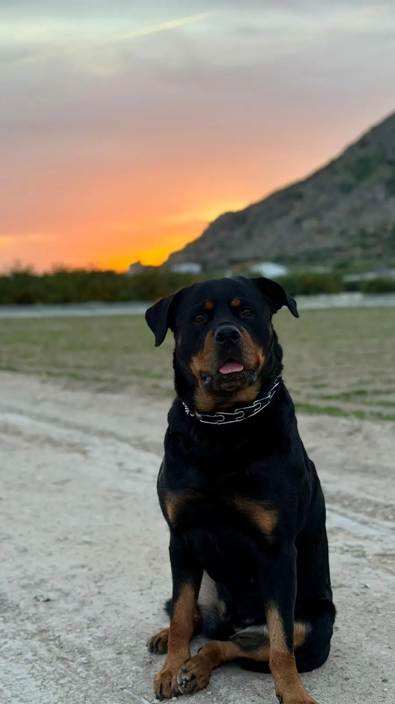
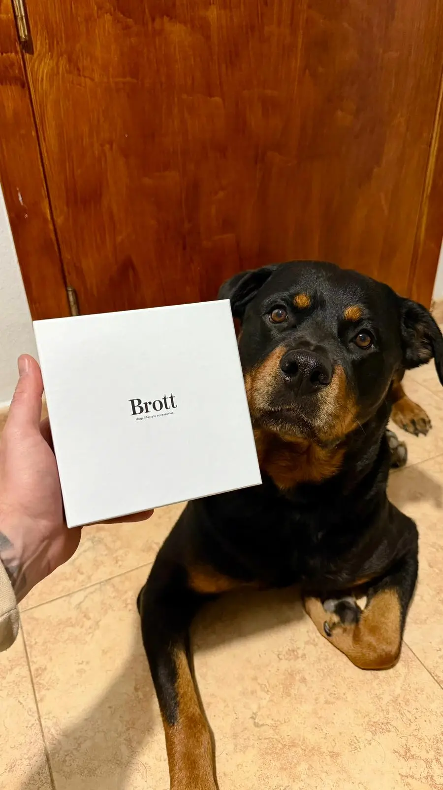
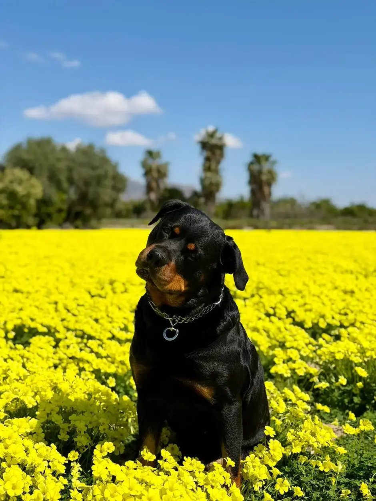

«Ese perro
es peligroso»
Cambian de acera. Recogen a su perro. Algunos te lo dicen a la cara, otros solo te miran. Maya no ha hecho nada: su raza lo hizo por ella.
40 kilos · 5 años · una reputación que no le pertenece
Lo que ves cuando Maya entra en un parque no es un perro. Es todo lo que te han contado sobre su raza, puesto delante de ti.
Cambian de acera. Recogen a su perro. Algunos te lo dicen a la cara, otros solo te miran. Maya no ha hecho nada: su raza lo hizo por ella.
En España un Rottweiler es PPP por catálogo, no por conducta. Da igual cómo se comporte: los papeles son los mismos para todos.
Un perro pequeño sale en semanas. Un PPP pasa meses, a veces años. No porque nadie los quiera: porque el papeleo espanta antes de conocerlos.
Sin filtros ni trucos. Un vídeo al día de una perra de 40 kilos haciendo el tonto en el salón. Resulta que eso convence más que cualquier argumento.
Maya durmiendo. Maya esperando la comida. Maya robando el sofá. Lo extraordinario no convence a nadie; lo cotidiano sí, porque es lo que la gente reconoce de su propio perro.
01Nadie ha cambiado de opinión porque le griten en los comentarios. Se cambia viendo lo mismo muchas veces hasta que deja de encajar con lo que creías.
02Cada vez que alguien escribe «quiero uno igual», la respuesta es la misma: hay decenas esperando en protectoras ahora mismo. Nunca un criadero.
03


La próxima vez que veas uno de estos perros por la calle, vas a verlo distinto. Con eso basta para empezar.
Volver arriba